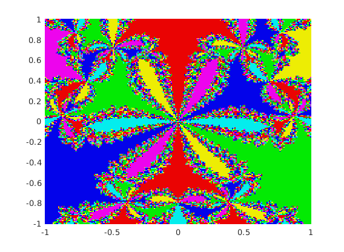

Zachary Kaplan
MATH 340 Assignment 4 2/15/18
Contents
Problem 1
f = @(x) x.^6 + x.^3 - 1; df = @(x) 6*x.^5 + 3*x.^2; tol = 1e-6; n = 100; A = zeros(2*n + 1, 2*n + 1); X = linspace(-1, 1, 2*n + 1); % Real parts Y = linspace(-1, 1, 2*n + 1); % Complex parts for a = 1:0.2:1.8 % My computer catches at a = 2... for j = 1:2*n + 1 for k = 1:2*n + 1 z0 = X(j) + Y(k)*1i; A(j, k) = complex_newtons(f, df, z0, a, tol); end end dcolor(X, Y, A); pause(0.1); end fprintf('The function used:\n'); dbtype complex_newtons;
The function used: 1 function [estimate, err, order] = complex_newtons(f, df, z0, a, tol) 2 3 prev1_err = inf; 4 prev2_err = inf; 5 6 % These are complex now. 7 estimate = z0; 8 err = a*f(estimate)/double(df(estimate)); 9 10 % NOTE: abs(err) gets the modulus of err. 11 while abs(err) > tol 12 estimate = estimate - err; 13 prev2_err = prev1_err; 14 prev1_err = err; 15 err = a*f(estimate)/double(df(estimate)); 16 end 17 18 % Easily derived from the relation e_n = C|e_n-1|^p and 19 % e_n-1 = C|e_n-2|^p. 20 order = log(abs(err/prev1_err))/log(abs(prev1_err/prev2_err)); 21 22 err = abs(err); 23 end
Problem 2
f = @(x) exp(x)-1; tol = 1e-7; [root, err, order] = secant(f, -1, 1, tol); fprintf(['Secant method for approximating the root of e^x - 1:\n' ... ' Approx : %.8f\n' ... ' Error : %e\n' ... ' Order : %f\n'], root, err, order); fprintf('The function used:\n'); dbtype secant;
Secant method for approximating the root of e^x - 1:
Approx : -0.00000000
Error : -2.759836e-11
Order : 1.617446
The function used:
1 function [estimate, err, order] = secant(f, x0, x1, tol)
2 a = x0;
3 b = x1;
4 err = f(b)*(b - a)/(f(b) - f(a));
5
6 prev1_err = inf;
7 prev2_err = inf;
8
9 while abs(err) > tol
10 a = b;
11 b = b - err;
12 prev2_err = prev1_err;
13 prev1_err = err;
14 err = f(b)*(b - a)/(f(b) - f(a));
15 end
16
17 % Easily derived from the relation e_n = C|e_{n-1}|^p and
18 % e_{n-1} = C|e_{n-2}|^p.
19 order = log(abs(err/prev1_err))/log(abs(prev1_err/prev2_err));
20
21 estimate = b;
22 end